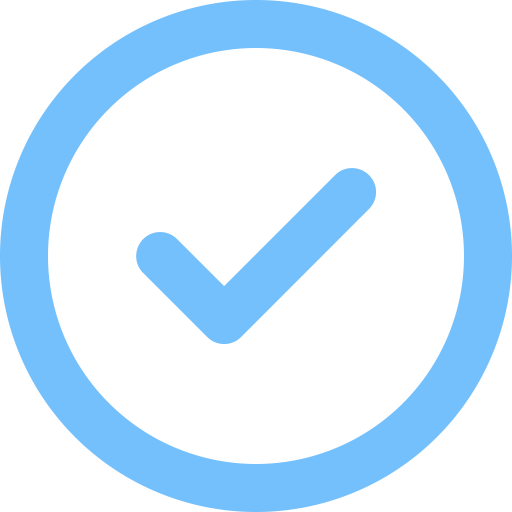

Python
In the spring of 2024, I graduated from the Math and Science Academy in Woodbury, Minnesota — the top-ranked high school in the state. During my time at MSA, I took a rigorous course load focused on advanced STEM subjects, including Calculus, Computer Programming, Physics, Chemistry, and Biology. It was through these experiences that I discovered my passion for software development and machine learning, as I explored a wide range of topics that challenged and inspired me.
Currently, I attend the California Institute of Technology, where I’m majoring in Computer Science and Business, Economics, and Management, while also competing as a member of the Men’s Basketball team. During my first year at Caltech, I’ve taken a variety of introductory courses in programming, calculus, physics, and the humanities. Balancing academics with athletics has helped me strengthen my time management, communication, and situational awareness — both in the classroom and on the court.
Project-based introductory computer programming course that introudces the fundamentals of Python. Learning the utilization of data types, variables, assignment, control structures, functions, scoping, compound data, string processing, modules, basic input/output (terminal and file), as well as maintenance skills including debugging, testing, and documentation.
Python
Data Types
Control Structures
Debugging
Lists
Tuples
Dictionaries
Sets